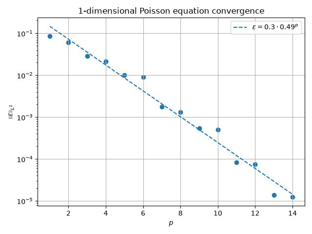
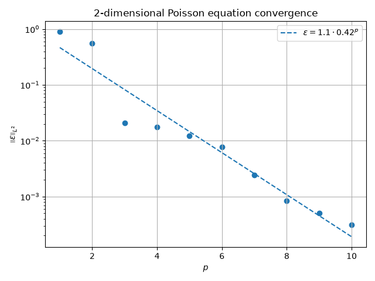
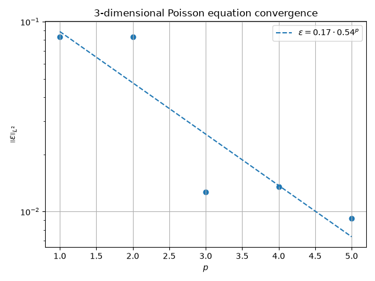

Note
Go to the end to download the full example code.
N-D Advection Diffusion#
This example demonstrates system for N-dimensional advection-diffusion equation can be set up.
The equation is defined in the weak form as:
from functools import partial
from time import perf_counter
from typing import Sequence
import matplotlib.pyplot as plt
import numpy as np
import numpy.typing as npt
from fdg import (
BasisSpecs,
BasisType,
CoordinateMap,
DegreesOfFreedom,
FunctionSpace,
IntegrationMethod,
IntegrationSpace,
IntegrationSpecs,
KForm,
KFormSpecs,
SpaceMap,
compute_kform_interior_product_matrix,
compute_kform_mass_matrix,
incidence_kform_operator,
projection_kform_l2_dual,
reconstruct,
transform_kform_to_target,
)
The manufactured solution for the general N-dimensional case uses the following for the manufactured solution:
This gives the forcing function:
SCALE = 0.1
ALPHA = 0.05
def manufactured_solution(*x: npt.NDArray[np.double]) -> npt.NDArray[np.double]:
"""Exact manufactured solution."""
res = np.cos(x[0] * np.pi / 2)
for v in x[1:]:
res *= np.cos(v * np.pi / 2)
return res * SCALE
def vector_field(
coeffs: npt.NDArray[np.double], *x: npt.NDArray[np.double]
) -> tuple[npt.NDArray[np.double], ...]:
"""Vector field used for advecion."""
vals: list[npt.NDArray[np.double]] = list()
for c_row in coeffs:
vals.append(np.sum([c * v for c, v in zip(c_row, x, strict=True)], axis=0))
return tuple(vals)
def manufactured_source_laplacian(*x: npt.NDArray[np.double]) -> npt.NDArray[np.double]:
"""Exact Laplacian source term."""
res = np.cos(x[0] * np.pi / 2)
for v in x[1:]:
res *= np.cos(v * np.pi / 2)
res *= -((np.pi / 2) ** 2) * len(x)
return res * SCALE
def manufactured_source_advection(
coeffs: npt.NDArray[np.double], *x: npt.NDArray[np.double]
) -> npt.NDArray[np.double]:
"""Exact advection source term."""
vf = vector_field(coeffs, *x)
res = np.zeros_like(x[0])
for idx, v in enumerate(vf):
grad_i = -np.pi / 2 * np.sin(np.pi / 2 * x[idx])
for j, s in enumerate(x):
if j == idx:
continue
grad_i *= np.cos(np.pi / 2 * s)
res += grad_i * v
return res * SCALE
def manufactured_source(
coeffs: npt.NDArray[np.double], *x: npt.NDArray[np.double]
) -> npt.NDArray[np.double]:
"""Exact source term."""
return ALPHA * manufactured_source_laplacian(*x) + manufactured_source_advection(
coeffs, *x
)
First the geometry of the space this will be solved on will be defined. For this case, we use the unit square, where the interior is deformed, while boundaries are the same. The mapping for each coordinate is based on Equation (5), with \(c\) being the parameter that determines the scale of deformation.
def disturbed_mapping(
c: float, idx: int, *x: npt.NDArray[np.double]
) -> npt.NDArray[np.double]:
"""Return a perturbed map, where the boundaries are not affected, but the interior is.
Parameters
----------
c : float
Strenght of the disturbance.
idx : int
Index of the input to base the mapping on.
*x : array
Coordinates where the mapping should be computed.
Returns
-------
array
Input coordinate ``idx``, but somewhat.
"""
base = x[idx]
d = np.full_like(base, c)
for v in x:
d *= (1 - v**2) * np.sin(np.pi * v)
return base + d
Mappings for every coordinate are collected into a joined SpaceMap,
which is then used to map \(k\)-form components between the reference domain
and the physical domain.
def create_space_map(
c: float, orders: Sequence[int], space: IntegrationSpace
) -> SpaceMap:
"""Create space map that are is disturbed."""
func_space = FunctionSpace(
*(BasisSpecs(BasisType.LAGRANGE_UNIFORM, order) for order in orders)
)
ndim = len(orders)
points = np.meshgrid(
*[np.linspace(-1, +1, order + 1) for order in orders], indexing="ij"
)
return SpaceMap(
*[
CoordinateMap(
DegreesOfFreedom(func_space, disturbed_mapping(c, idim, *points)),
space,
)
for idim in range(ndim)
]
)
With these two utilities, we can start working on computing convergence of the FEM discretization in the \(L^2\)-norm
First we must define how integration will be done. Here two
IntegrationSpace objects are defined - one for computing our
results and another, finer, for computing the error.
With these discretizations defined, we can use previously written functions to create the space mappings.
def create_space_maps(order_integration, type_integration, ndim, dp):
"""Create integration spaces."""
int_space = IntegrationSpace(
*((IntegrationSpecs(order_integration, type_integration),) * ndim)
)
int_space_higher = IntegrationSpace(
*((IntegrationSpecs(order_integration + dp, type_integration),) * ndim)
)
space_map = create_space_map(0.1, [5] * ndim, int_space)
space_map_high = create_space_map(0.1, [5] * ndim, int_space_higher)
return space_map, space_map_high
Along with the IntegrationSpace objects to define integration we
must define the discretization of the \(k\)-forms using a FunctionSpace
object.
With base function space defined, we can define some \(k\)-form
specifications using KFormSpecs. These do not contain any degrees of
freedom themselves, but provide information about the order and function spaces.
def create_kform_specs(type_basis, order_basis, ndim):
"""Create k-form specifications."""
base_space = FunctionSpace(*((BasisSpecs(type_basis, order_basis),) * ndim))
specs_u = KFormSpecs(ndim, base_space)
specs_q = KFormSpecs(ndim - 1, base_space)
return specs_u, specs_q
Since we aim to solve a (linear) advection-diffusion problem, we need the vector field. In this example it is a linear function of the coordinates. While we could use completely coefficients, by making them depend only on the number of dimensions we can fairly compare subsequent solves.
To be able to use the vector field, we must evaluate the components in the physical domain at integration points.
def evaluate_vector_field(coeffs, sm: SpaceMap):
"""Evaluate vector field at integration points."""
vf = vector_field(
coeffs, *[sm.coordinate_map(idx).values for idx in range(sm.input_dimensions)]
)
return vf
While for left side symmetry could be exploited, there’s no harm to compute it in full for this example. To that end, we first compute the two mass matrices for the two \(k\)-forms, then apply the incidence operators as needed.
Now that we have the required blocks, we can assemble the system matrix. Alternatively we could have used Schur’s complement to compute the solution, but for the sake of simplicity here we use the full dense solve.
def assemble_lhs(sm, specs_q, specs_u, vf):
"""Crate the system matrix."""
mq = compute_kform_mass_matrix(
sm, specs_q.order, specs_q.base_space, specs_q.base_space
)
mu = compute_kform_mass_matrix(
sm, specs_u.order, specs_u.base_space, specs_u.base_space
)
mqip = compute_kform_interior_product_matrix(
sm,
specs_u.order,
specs_u.base_space,
specs_q.base_space,
np.asarray(vf, np.double),
)
mu_e = incidence_kform_operator(specs_q, mu, right=True)
et_mu = incidence_kform_operator(specs_q, mu, transpose=True)
system_matrix = np.block(
[
[mq, et_mu],
[ALPHA * mu_e + mqip.T, np.zeros_like(mu)],
]
)
return system_matrix
The right side of the Poisson equation can be computed from the “dual projection” of the manufactured source term on the function space.
def assemble_rhs(specs_u, specs_q, sm_h, coeffs):
"""Assemble the system's RHS."""
source_vals = projection_kform_l2_dual(
[partial(manufactured_source, coeffs)], specs_u, sm_h
)[0]
rhs = np.concatenate(
(np.zeros(sum(specs_q.component_dof_counts)), source_vals.flatten())
)
return rhs
From here we can split solution vector into degrees of freedom of individual
\(k\)-forms represented by KForm objects.
To compute the \(L^2\) error, we need to reconstruct the computed solution,
subtract the manufactured solution, then integrate the square of the error.
def reconstruct_error_l2(specs_q, specs_u, solution_dofs, ndim, sm_h):
"""Reconstruct the solution and compute the L2 error."""
sol_q = KForm(specs_q)
sol_u = KForm(specs_u)
nq = sum(specs_q.component_dof_counts)
sol_q.values[:] = solution_dofs[:nq]
sol_u.values[:] = solution_dofs[nq:]
u_dofs = DegreesOfFreedom(
specs_u.get_component_function_space(0), sol_u.get_component_dofs(0)
)
# K-form computed values at integration nodes
computed_values = transform_kform_to_target(
ndim,
sm_h,
[reconstruct(u_dofs, *sm_h.integration_space.nodes())],
)[0]
# K-form exact values at integration nodes
real_values = manufactured_solution(
*[sm_h.coordinate_map(idx).values for idx in range(ndim)]
)
# Error
err_l2 = np.sum(
(computed_values - real_values) ** 2
* sm_h.determinant
* sm_h.integration_space.weights()
)
return err_l2
All the small building blocks discussed before can now be put together to form the error calculation function.
def compute_l2_error(
order_integration: int,
type_integration: IntegrationMethod,
order_basis: int,
type_basis: BasisType,
ndim: int,
dp: int,
) -> float:
"""Solve the N-dimensional Poisson equation and compute the L^2 error."""
# Space maps
sm, sm_h = create_space_maps(order_integration, type_integration, ndim, dp)
# Vector coefficients
coeffs = creat_vector_filed_coefficients(ndim)
# Vector field values
vf = evaluate_vector_field(coeffs, sm)
# K-form specs
specs_u, specs_q = create_kform_specs(type_basis, order_basis, ndim)
# LHS of the system
lhs = assemble_lhs(sm, specs_q, specs_u, vf)
# RHS
rhs = assemble_rhs(specs_u, specs_q, sm_h, coeffs)
# Solve
solution_dofs = np.linalg.solve(lhs, rhs)
# Compute error squared
err_l2 = reconstruct_error_l2(specs_q, specs_u, solution_dofs, ndim, sm_h)
# Retur the error
return float(np.sqrt(err_l2))
For this test, we will use Bernstein basis, Gauss integration rule, and the order difference of 1 between the lower and higher order integration rules.
BTYPE = BasisType.BERNSTEIN
ITYPE = IntegrationMethod.GAUSS
DP = 1
for ndim, plimit in zip(range(1, 4), [15, 11, 6], strict=True):
pvals = np.arange(1, plimit)
evals = np.zeros(pvals.size)
tvals = np.zeros(pvals.size)
for ip, p in enumerate(pvals):
pv = int(p)
t0 = perf_counter()
l2 = compute_l2_error(pv + 0, ITYPE, pv, BTYPE, ndim, DP)
t1 = perf_counter()
evals[ip] = l2
tvals[ip] = t1 - t0
k1, k0 = np.polyfit(pvals, np.log(evals), deg=1)
c = np.exp(k0)
b = np.exp(k1)
fig, ax = plt.subplots()
ax.scatter(pvals, evals)
ax.plot(
pvals,
c * b**pvals,
linestyle="dashed",
label=f"$\\varepsilon = {c:.2g} \\cdot {b:.2g}^{{p}}$",
)
ax.set(
yscale="log",
xlabel="$p$",
ylabel="$\\left|\\left| \\varepsilon \\right|\\right|_{ L^2 }$",
)
ax.grid()
ax.legend()
ax.set_title(f"{ndim}-dimensional Poisson equation convergence")
fig.tight_layout()
plt.show()



Total running time of the script: (0 minutes 1.663 seconds)